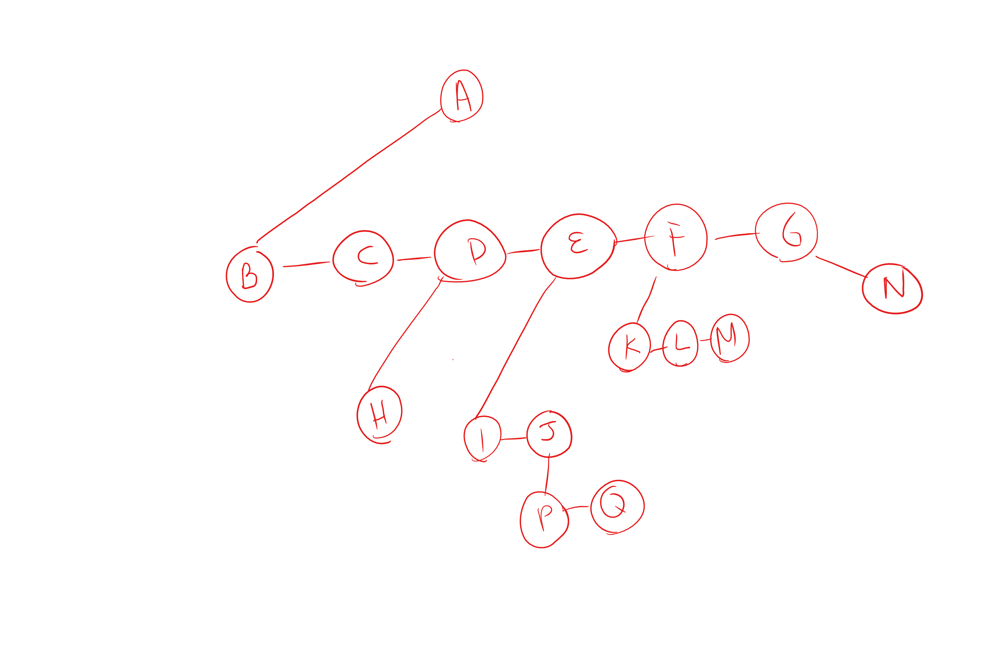
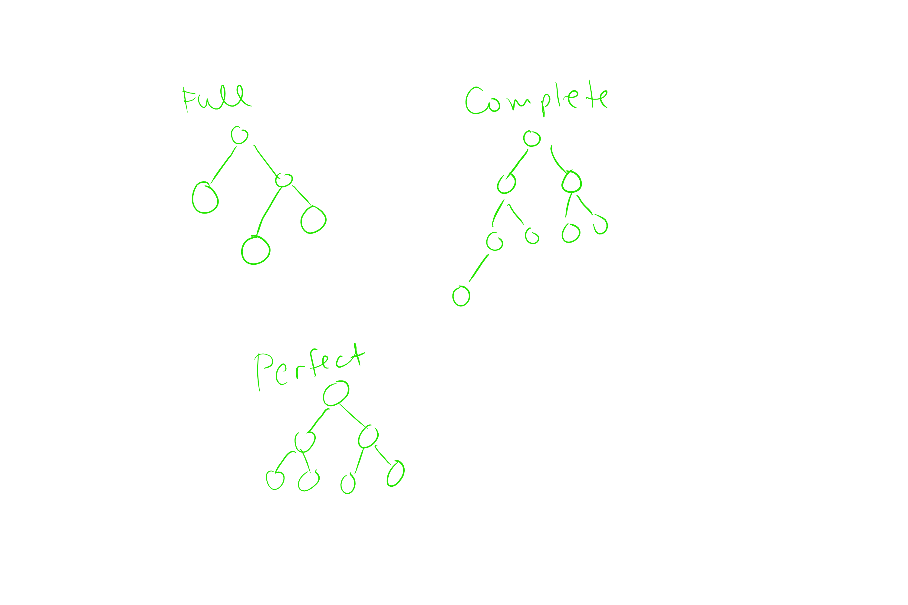
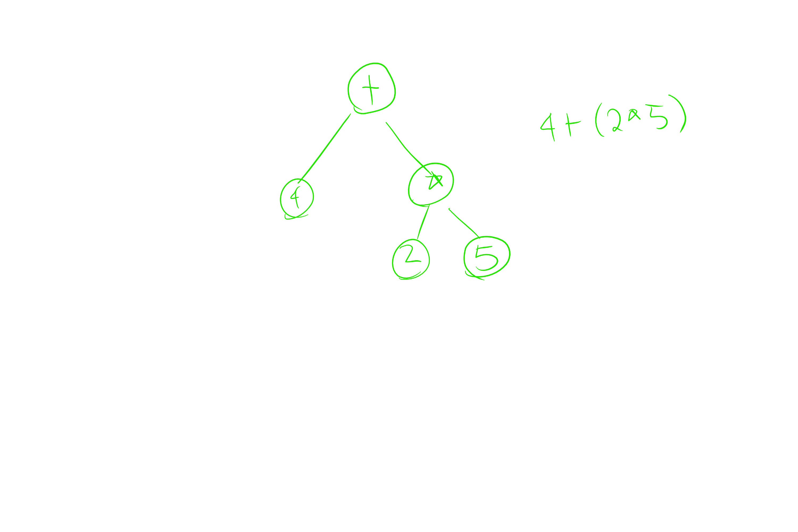

/**
* Obtains an Iterator object used to traverse the collection.
* @return an iterator positioned prior to the first element.
*/
public java.util.Iterator iterator( )
{
return new ArrayListIterator( );
}
/**
* This is the implementation of the ArrayListIterator.
* It maintains a notion of a current position and of
* course the implicit reference to the MyArrayList.
*/
private class ArrayListIterator implements java.util.Iterator
{
private int current = 0;
private boolean okToRemove = false;
public boolean hasNext( )
{
return current < size( );
}
public AnyType next( )
{
if( !hasNext( ) )
throw new java.util.NoSuchElementException( );
okToRemove = true;
return theItems[ current++ ];
}
public void remove( )
{
if( !okToRemove )
throw new IllegalStateException( );
MyArrayList.this.remove( --current );
okToRemove = false;
}
}
public void remove( ) {
MyArrayList.this.remove( --current );
}
public class MyArrayList implements Iterable {
private static final int DEFAULT_CAPACITY = 10;
private AnyType [ ] theItems; // Where we'll actually store the data
private int theSize; // The CURRENT size of the array
public MyArrayList( )
{
doClear( );
}
theItems = (AnyType []) new Object[ newCapacity ];
private Node getNode( int idx, int lower, int upper )
{
Node p;
if( idx < lower || idx > upper )
throw new IndexOutOfBoundsException( "getNode index: " + idx + "; size: " + size( ) );
if( idx < size( ) / 2 )
{
p = beginMarker.next;
for( int i = 0; i < idx; i++ )
p = p.next;
}
else
{
p = endMarker;
for( int i = size( ); i > idx; i-- )
p = p.prev;
}
return p;
}
/**
* This is the implementation of the LinkedListIterator.
* It maintains a notion of a current position and of
* course the implicit reference to the MyLinkedList.
*/
private class LinkedListIterator implements java.util.Iterator
{
private Node current = beginMarker.next;
private int expectedModCount = modCount;
private boolean okToRemove = false;
public boolean hasNext( )
{
return current != endMarker;
}
public AnyType next( )
{
if( modCount != expectedModCount )
throw new java.util.ConcurrentModificationException( );
if( !hasNext( ) )
throw new java.util.NoSuchElementException( );
AnyType nextItem = current.data;
current = current.next;
okToRemove = true;
return nextItem;
}
public void remove( )
{
if( modCount != expectedModCount )
throw new java.util.ConcurrentModificationException( );
if( !okToRemove )
throw new IllegalStateException( );
MyLinkedList.this.remove( current.prev );
expectedModCount++;
okToRemove = false;
}
}
PICTURE HERE 4-1 4-2
PICTURE HERE lec 4-3
// Concrete Class
import java.util.LinkedList;
//Interface
import java.util.Queue;
public class Josephus{
public static final void main(String[] args){
int count = 5;
// q is restricted to only what methods Queues use.
// q is a Linked List Object with restrictures from the Queue Interface
// Queue is an Interface and you can't instantiated Queues, only Concrete Classes
Queue q = new LinkedList();
for(int i=1; i<=10; i++){
//Enqueue Operation Here
q.offer(i)
}
int c = 0;
while(q.size()!=1){
int x = q.poll();
c++
if(c==5){
System.out.println("So long: "+ x);
c = 0;
}else{
q.offer(x);
}
}
System.out.println("The winner is: "+ q.poll());
}
}
Terminology
Root - Top of the Tree, Head of the Tree
Children - Any node hanging off of a node
Siblings - Nodes that are children of the same Parent
Parent- A node that has children
Leaf Nodes- Nodes with no Children
Interior Nodes - Nodes with No Leaves
Path - The set of edges that we follow to get from the root to another node
Edges - The 1 way connection from a parent to a child
Length of the Path - How many edges we traversed
Depth of a Node - How far away am I from the root? Length of the unique path back to the root
*Depth of the Root is 0
Height of a Node - The length of the path from a given node to the furthest leaf
Empty Tree Height : -1
Generic Tree Code
class TreeNode{
AnyType data;
TreeNode(AnyType) nextSibling;
// Example: For the Root -> There is no Siblings
// The way to access the other children of the root is the look at the sibling
TreeNode(AnyType) firstChild;
// Example: For the Root the First Child is the Left Most Child Node
}
Example of a Tree : File Directories on a Computer
Files: Leaves
SubDirectories: Children
Psuedo Code for a Pre Order Tree Traversal
private void listAll(int depth){
printName(depth); //Print the name of the object with proper tabbing <- This is indicator that the node is visited
if(isDirectory())
for each file c in this directory (for each child)
c.listAll(depth +1);
}
//Driver Method That Hides the Book Keeping
public void listAll(){
listAll(0);
}
Pre Order: Prints the Node then Print the Children
Post Order: Print the Children First then Print the Node
Binary Tree: Each Node is Restricted to having 0 1 or 2 children
There is a Left Child and a Right Child of a Node
class BTNode{
AnyType data,
BTNode left;
BTNode right;
}
Binary Tree Terminology
Full : Every node has either 2 children or has a leaf
Complete: One where every level is completely filled in except for the very last level but the last level has to be filled in from left to right
Perfect: Where Every Level is fully filled in
Expression Tree :Each node of the tree can be 1 of 2 types (operator or an operand)
Operator Nodes are either the root or the right child
Operand Nodes are Leaves
Example of a Expression Tree Pre Order Traversal
int eval(ETNode t){
//Check if t is the operand or an operator
if(t.isOperand){
return t.value;
}
//Check the children of the operator
int lval = eval(t.left);
int rval = eval(t.right);
//Apply Method takes in operator and has a bunch of switch cases
return apply(t.operator, lval, rval);
}
*Make sure you add parenthesis of an infix so the order of operations work
If you perform a post order expression tree traversal you get a post fix expression (Reverse Polish Notation)
If the In Fix Expression is : 3*(5+2).
Then the Polish Expression is: 3 5 2 + *
This is a stack algorithm so we will need a stack.
String: 3 5 2 + *
Stack: 3 5 2
+ -> Pop 2, 5
Equation: 5 + 2
Value -> 5+2 = 7
Stack -> 3, 7
If empty -> Correct Answer
If not -> Not a complete expression